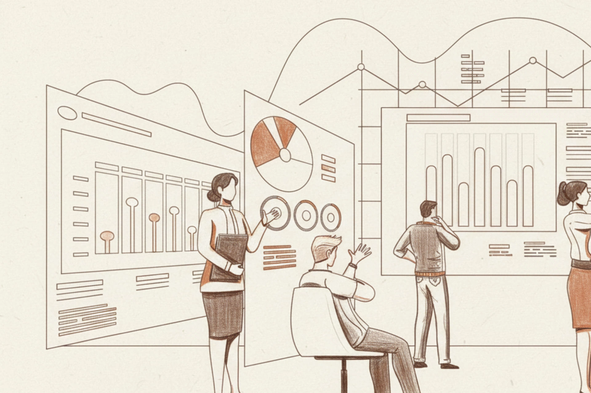

Warren Buffett 著名的傳記《雪球》提到複利就像是滾雪球，找到一條足夠長的坡道讓雪球滾下去，時間越久則雪球越大。
價值投資這條道路上的最大考驗，不是技巧而是耐心。如果你理性上知道你手中的投資是正確的，你必須堅忍下去，抵禦很多誘惑和恐懼，堅守你當初的選擇，才能嚐到甜美的複利果實。
先端上心靈雞湯
複利的威力應該無須多說，網路上到處都看得到相關文章，保險業也經常套用複利公式，總之就是耐心持有、長期持有。我很難具體幫上什麼忙，就先分享幾則金句，壯大你的心智。
- 當你決定買入股票，你就是企業的合夥人，股市每日漲跌都與你無關，甚至關門一年也沒有影響。你唯一要在意的是數年後享受播種的成果。
- 耐心，是你用大部分的難熬時光，等待小部分的收穫時間。
- 價格是你所付出的、價值是你所得到的。
- 不確定性是長期價值投資者的朋友。
- 華爾街是靠不斷交易來賺錢，你則是靠不動如山去賺錢。
價值投資的本質
我認為談耐心和長期持有之前，必須先搞清楚價值投資的本質，不要忘記本質、不要搞得太複雜，所有一切都大道至簡，想通了就能夠豁然開朗。
買股票就是投資企業
看好一家企業的營運狀況或前景，所以你買進股票、將錢投資給企業，讓企業拿著錢繼續做原本就在做的事情。
作為投資人，你陪著企業一起承擔不確定的未來，所以當企業有賺錢，你每年都能享受獲利。
以上這樣對吧？這不就是股票被發明出來的初衷嗎？
短期股票波動、有的沒的技術指標，都是後來衍生的產物，不該是你（價值投資者）追逐的目標。
你能夠賺到價差，是因為你陪伴著的企業變得更好，他們努力賺了很多錢，讓你手中的股票更有價值，你未來可以用更高價格賣掉。
所以，打從一開始，你該注意的就是企業價值，無須理會短期的股價波動。

短期波動因素
股票市場短期內會被各種雜訊影響，常見的有政策變化、政治紛擾、投機行為等，也有很多雜訊是自己嚇自己，像是利率上漲會擔憂、利率下跌也會擔憂。
但那都不重要，我們壓根不需要被干擾，經過一段足夠長期的時間，股票價格最終會回歸企業內在價值。
不過仔細想想，也不是完全事不關己，如果短期內被錯誤低估，那不正是我們可以再次大舉買入的機會？
每天睡好覺
身為價值投資者，你需要的只是用合理價格買入優秀企業，讓自己可以每天安心好眠，保持心態穩定，持續正向循環。
如果你買入股票的企業，會讓你每天失眠，那你為何要花錢做這件事？
要怎麼做到耐心與長期持有
耐心與長期持有會讓人直覺想到意志力，其實反而要減少使用意志力的機會，否則經常挑戰人性，容易遇到戰敗的一天。
設定清晰的投資計畫
持有一檔股票前，先寫下「買進理由」和「可能的賣出理由」，這等於是最高方針。
每當遇到意志力動搖，就拿出來檢視，目前持股是否「仍符合買進理由」或「已經滿足可能的賣出理由」，再決定要怎麼做。
不需要每天盯著股市
說真的，你身為長期的價值投資者，有什麼理由非得要每天盯著股市？「每天勤勞盯著股市」這件事，我想不到能夠為你賺錢的理由，倒是知道一大堆會勾起你的貪婪和恐懼的可能性。
多閱讀幾份財報、充滿知識的書籍，幫助自己腦袋充實，這才是變富有的關鍵。
辨別媒體評論
不曉得你有沒有經歷過股市空頭，2000年網路泡沫和2008年金融風暴，還有歐債五國等各種空頭時期，每次都是絕望氣氛籠罩，加上媒體推波助瀾，簡直像是明天就是世界末日。
但每次都會被證明，最後總會回到該有的經濟水準。
你該擔心的應該是「企業營運狀況惡化」或「產業衰落」這類真正會長期影響企業未來的狀況，因此每當有新聞出現，你都必須第一時間辨別這是屬於短期影響或長期影響。
安全邊際
如果你買入股票的價格足夠便宜、足夠安全，那股價受到短期波動影響的時候，你自然能夠老神在在。
這也是為什麼安全邊際是價值投資者必須奉行的最高原則之一，保護自己免於虧損，不怕沒賺錢，就怕會虧錢。
複利的甜美果實
最後再次聊聊複利所帶來的甜美果實。
假設你每年投入 $10,000、平均報酬率 5%（很多 ETF 都可以達到），到第20年，你投入本金 $200,000，最後能夠拿到 $347,193，報酬率能夠達到 173.5%。
如果平均報酬率能夠有 8%，則第20年的報酬率為 247.1%，這是較為穩健的複利結果，不需要拿著身家殺進殺出。

當你成功克服短期波動，長期持有企業股票，讓企業長時間為你賺錢，你不僅可以獲得超乎想像的報酬，還可以每天睡好覺。
比起每天努力閱讀一大堆資訊後調整策略，長期持有才更是價值投資者應該遵守的原則。